Summer Enrollments
A separate, mostly-automated enrollment lifecycle that runs alongside the regular school-year enrollment lifecycle every summer. ECMS itself is the primary actor for most of this guide — it creates the records, and (in almost every case) it approves them too — with the CBO/FCCN vendor's Enrollment Manager reviewing, editing, and submitting each one, and a DOE Enrollment Specialist only entering the picture for one specific exception.
Overview
This guide is the summer-specific variant of the enrollment lifecycle already covered in
Guide 4 (Enrollments — CBO) and
Guide 5 (Enrollments — FCCN) — it does not re-explain
the basic Draft → Submitted → Approved → Active → Discharged status path, MySchools, OASIS,
or ACCIS, all of which work the same way here. What's different about summer is who (or what) does each
step. Every summer is preceded by an approved signed BRD, D03.1 (Jira epic DOEECMS-1676),
that automates almost the entire lifecycle: at the end of the school year, ECMS itself — not a person
— automatically clones every eligible school-year enrollment into a new Draft summer enrollment. The
vendor then reviews, edits, and submits it from the portal exactly as they would any other enrollment. From
there, ECMS again acts on its own: it automatically approves the submission, without a DOE Enrollment
Specialist in the loop at all — unless the student's address changed, which is the one case that still
routes to a human reviewer. There's also a narrow manual fallback, covered at the end of this guide, for
school-year enrollments that get approved after the automation has already run for the year.
On the object model, a summer enrollment is not a separate record type: it's the same
ECMS_Enrollment__c object, distinguished only by Type__c = Summer instead
of Regular. This guide follows one real family through the whole lifecycle — student
Raj sing at the CBO site (network account “CBO Acoount”), whose
portal-provisioned Enrollment Manager is Sunny Sing — and switches to a small number of
sibling records at the same site for the stages Raj sing's own enrollment hadn't reached yet, following the
same transparent-about-switching-examples approach used in Guides 8 and 9.
1ECMS auto-creates a Draft summer enrollment
DO Nothing — this step happens entirely inside ECMS, with no vendor or DOE action. Per DOEECMS-2158, once the last day of the regular school year has passed (the automation runs the night of June 30th, tenant time, provided an active/published vendor site mapping exists for the new fiscal year), the system scans every school-year enrollment in Approved or Information Requested status for the eligible seat types — HS-CTL, Toddler CTL, Infant CTL, and EDY, across all program types — and clones one summer enrollment per eligible record.
RESULT A brand-new Enrollment record appears with its own unique enrollment number, Type = Summer, and Status = Draft by default. Almost every field is copied as-is from the school-year enrollment — except First Day of Attendance, which is reset to the first day of summer school. Per the BRD's data-cloning acceptance criteria, Attendance records, Approval History, and eligibility results are deliberately not copied over (only the underlying student IDs — Case Number, Child Number, Student ID — carry across). Below, ENROL-0000000025, Raj sing's newly auto-created summer enrollment: Fiscal Year 2027, First Day of Attendance 6/23/2026, Status Draft, owned by Sunny Sing (the record was cloned from a school-year enrollment already assigned to that Enrollment Manager).
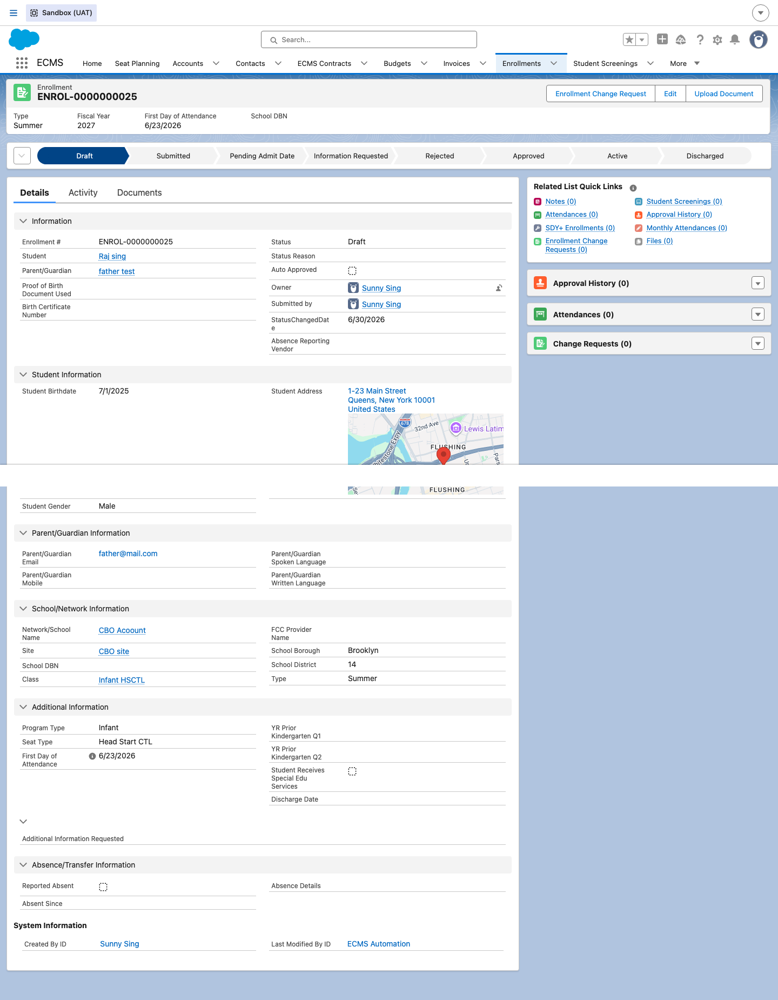
2It appears on the student's Contact record
DO Nothing further — navigate to Raj sing's Contact record to confirm this.
RESULT Per DOEECMS-2158's Contact-visibility acceptance criteria, the new summer enrollment shows up immediately in the Enrollments related list on the student's Contact record, alongside the prior school-year enrollment it was cloned from — here, Raj sing's Contact shows both ENROL-0000000007 (Discharged, Regular, the closed-out school-year record) and ENROL-0000000025 (Draft, Summer, the new one). Internal ECMS users with enrollment access can see the new record right away, regardless of its status — there's no waiting period.
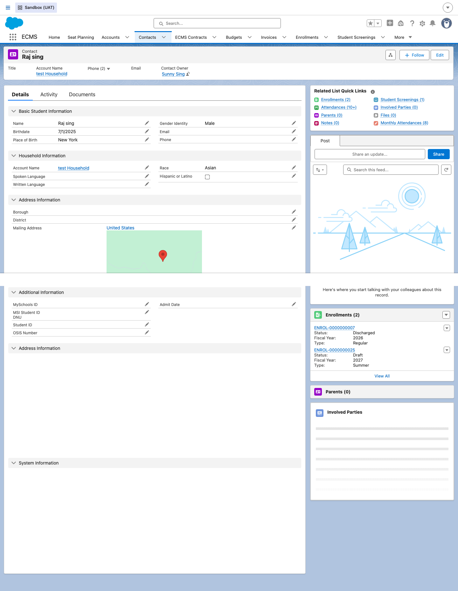
3The vendor sees it in the portal
DO Logged into the vendor portal as Sunny Sing (Enrollment Manager for CBO Acoount), open Student Enrollments.
RESULT Per DOEECMS-2169 AC1, once a summer enrollment has been auto-created, it's immediately visible to the vendor in the portal's Enrollments list, mixed in with enrollments at every other stage of the lifecycle — here, Draft (e.g. Toofu Dairy 2), Submitted (Toofu Dairy), and already-Approved records (Agoda Jio, Martin Hook) all sit side by side at CBO site.
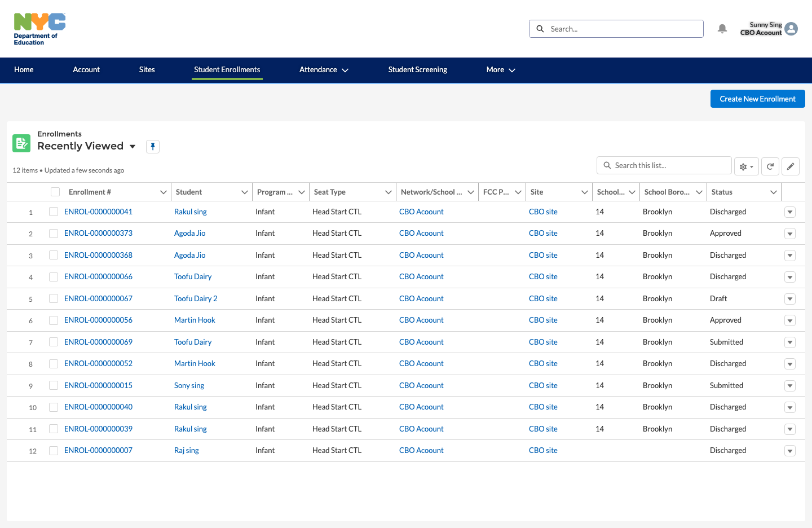
4Vendor reviews and edits before submitting
DO The Enrollment Manager opens the Draft summer enrollment (ENROL-0000000025, Raj sing) and reviews it, correcting the First Day of Attendance or other permitted enrollment details as needed.
RESULT Per DOEECMS-2169 AC2, the vendor can update editable fields like First Day of Attendance and other enrollment details, and the system saves whatever they enter. Key student identity fields — First Name, Last Name, Date of Birth, and Gender — remain non-editable for the vendor on a Draft summer enrollment record. The portal view below shows exactly this record mid-review: Status still Draft, an Edit action available, and a Submit Enrollment button ready for the next step.
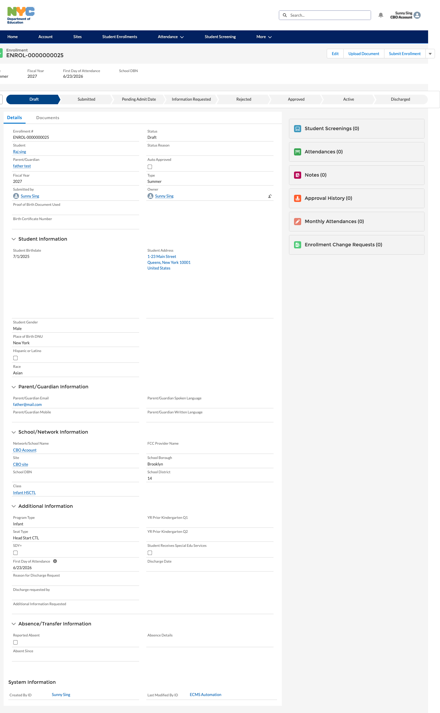
5Vendor submits the summer enrollment
DO Once satisfied, the Enrollment Manager clicks Submit Enrollment.
RESULT Per DOEECMS-2169 AC3, the enrollment is submitted following the existing validation and flow rules, and Status advances to Submitted. The example below, ENROL-0000000069 (Toofu Dairy, same CBO site), shows this state: Type Summer, Status Submitted, Fiscal Year 2027, with an Enrolment Specialist Approval step already sitting Pending in Approval History — the trigger for what happens automatically in the next step.
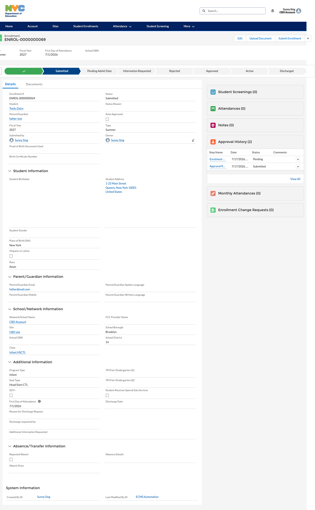
6ECMS auto-approves it on submission
DO Nothing — this is the headline automation in DOEECMS-2164. Unlike a regular school-year enrollment, a summer enrollment does not wait in the Enrollment Specialists' review queue.
RESULT The moment the vendor submits, ECMS immediately approves the record itself: Status flips to Approved, the Auto Approved checkbox is set, and both the portal and internal path bars reflect Approved. An Approval History entry is written with the note “Auto-approved vendor-submitted summer enrollment.” — the audit trail DOEECMS-2164 AC1 calls for. Below, ENROL-0000000373 (Agoda Jio, CBO site): Approved, Auto Approved checked, and that exact comment recorded against the Enrolment Specialist Approval step. After submission the record is read-only to the vendor again, same as before.
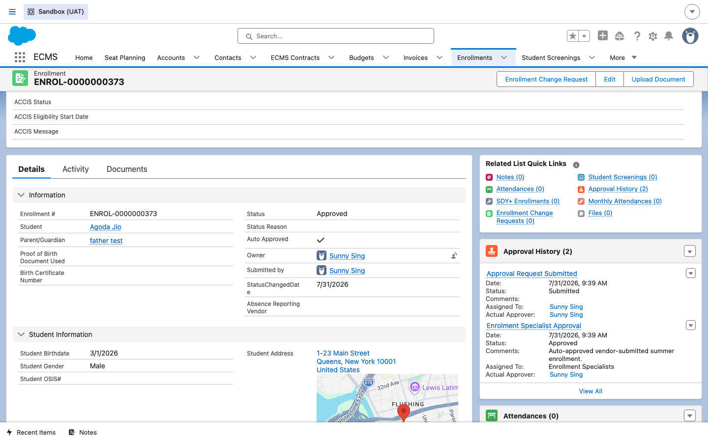
7Exception: an address change routes to review
DO Nothing extra from the vendor's side — but if the student's address was modified as part of the vendor's edits before submission, be aware the outcome is different from Step 6.
RESULT Per DOEECMS-2164's additional context, if the student's address was changed, the enrollment does not auto-approve. Instead it requires review by a DOE Enrollment Specialist through the existing review flow, and Status stays at Submitted until that review completes — this is the one path in the whole summer lifecycle where a person, not the system, makes the approval decision. The system still stores the updated address on the student's Contact record, overwriting the previous one. Internally, this is the same Enrollments list every other queued record shows up in — there's no separate "address exception" queue; an Enrollment Specialist simply finds it the same way they'd find any Submitted record.
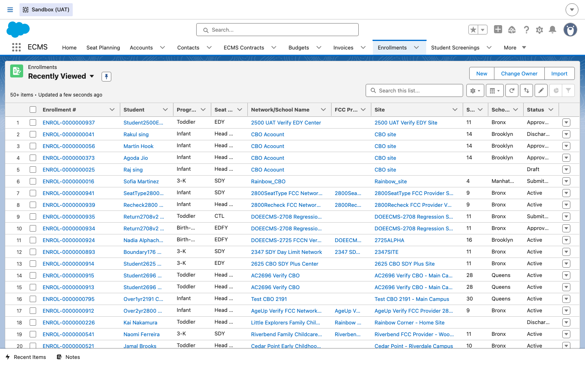
8No student screening record is created
DO Nothing to do here — this is a deliberate gap worth knowing about so you don't go looking for something that isn't there.
RESULT Per DOEECMS-2164 AC3, submitting a summer enrollment does not automatically create a corresponding Student Screening record, unlike a regular school-year enrollment submission, which still does. Look back at the Related List Quick Links on ENROL-0000000373 in Step 6 — Student Screenings (0) — even though the record is fully Approved. If you're used to seeing a screening appear automatically after a regular enrollment is submitted, don't expect the same behavior here.
9Late submissions still resolve automatically
DO Nothing — this covers what happens if a summer enrollment is still sitting in Draft, or gets submitted, after the summer session has already ended.
RESULT Per DOEECMS-2165, a summer enrollment that is submitted and approved (whether by an Enrollment Specialist or by the automation in Step 6) after the summer period has ended is still resolved consistently: the system automatically updates its status to reflect Approved for the Summer Program, in both the portal and internal path, with no manual status override required or available. Below, ENROL-0000000056 (Martin Hook, CBO site): Approved, with the Approval History comment reading “Summer school has ended. This enrollment has been automatically approved.” — the exact late-resolution wording the BRD calls for, distinct from the on-time auto-approve comment in Step 6.
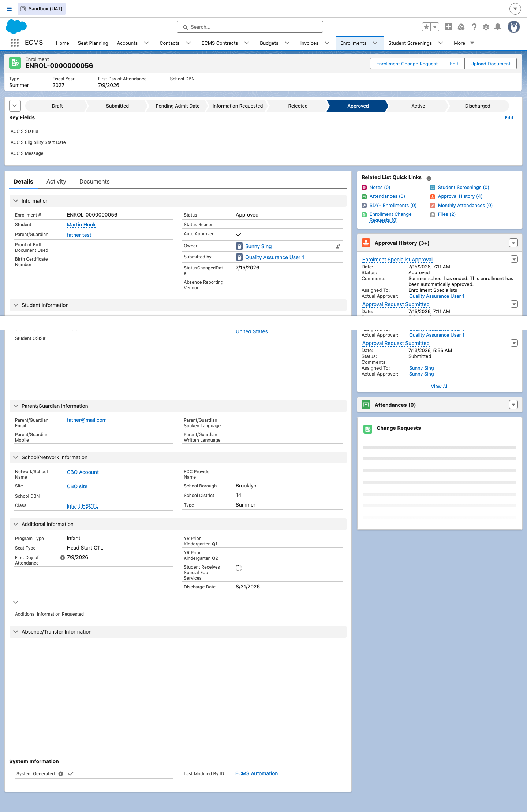
10Summer enrollments in the reporting dashboard
DO As DOE internal staff with reporting access, open the ECMS reporting Dashboard from Home and set its Enrollment Type filter to contains Summer.
RESULT Per DOEECMS-2168, the existing dashboard components — not a separate summer-only dashboard — simply re-render against summer data: Total Active/Approved Enrollments, Total Submitted Enrollments, Enrollments by Status and Seat Type, Enrollments Awaiting Approval, and Enrollments – Additional Info Needed. The dashboard below is filtered exactly this way and shows real counts (20 Active/Approved, 6 Submitted, 6 Awaiting Approval) across the summer enrollment population. Per the BRD, this same report can be run, refreshed, and exported at any time, regardless of enrollment status, and once summer ends the same components simply reflect regular school-year data again — no components are removed or hidden.
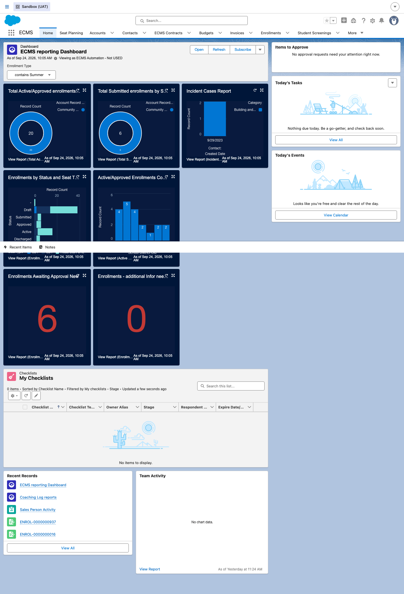
11End of the summer session
DO Nothing — a formal Discharge closes out the summer enrollment the same way it would close out any enrollment (see the Discharges guide for the general mechanics).
RESULT Status moves to Discharged with a mandatory Discharge Date (DOEECMS-2134 AC3/AC4 — the system will not save a Discharge without one, on summer or regular enrollments alike). Below, ENROL-0000000041 (Rakul sing, CBO site): Discharged, Discharge Date 7/6/2026, Status Reason “Parent Request,” with its Approval History still showing the earlier “Summer school has ended” auto-approval note from Step 9 before the record was later discharged.
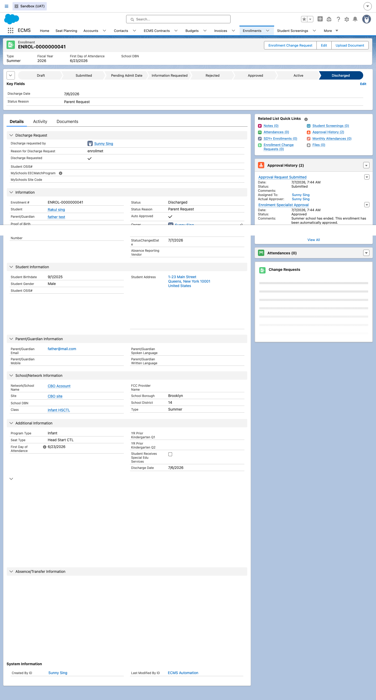
12The manual fallback for late-approved regular enrollments
DO As a vendor (CBO/FCCN) or Enrollment Specialist, if a regular school-year enrollment gets submitted and approved after the June 30th rollover automation has already run — but summer school hasn't ended yet — open that Approved (or Discharged, for valid return scenarios) regular enrollment record and click Create Summer Enrollment.
RESULT Per DOEECMS-2661, ECMS deliberately does not auto-roll a late-approved or late-discharged regular enrollment into summer — the automation in Step 1 already ran once for the year. Instead, the record's page layout surfaces a Create Summer Enrollment action so the vendor or Enrollment Specialist can trigger it intentionally. Clicking it clones the school-year enrollment into a new Draft summer enrollment with a new unique enrollment number, using the same cloning behavior as the automatic path in Step 1, and the new record then follows the standard summer submission/auto-approval workflow described in Steps 4–6. Below, ENROL-0000000937 (a Regular enrollment, First Day of Attendance 7/1/2026, approved well after the rollover date): the Create Summer Enrollment button sits right alongside Edit and Enrollment Change Request on the record's action bar.
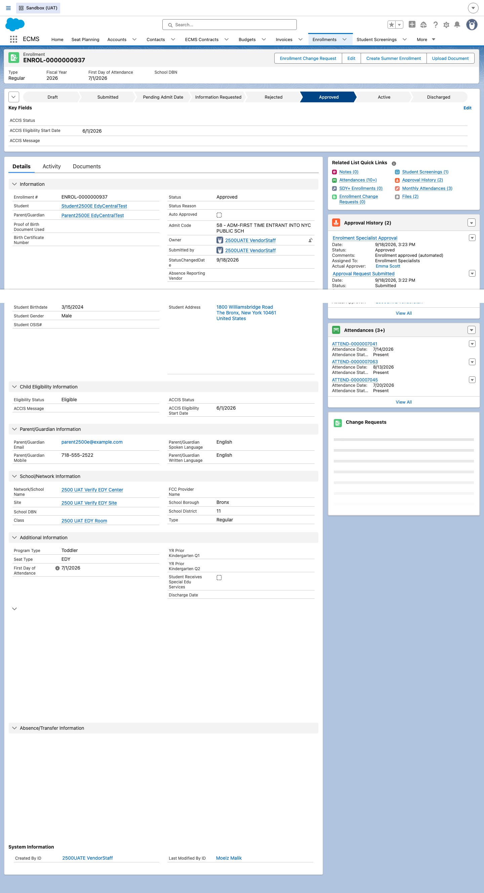